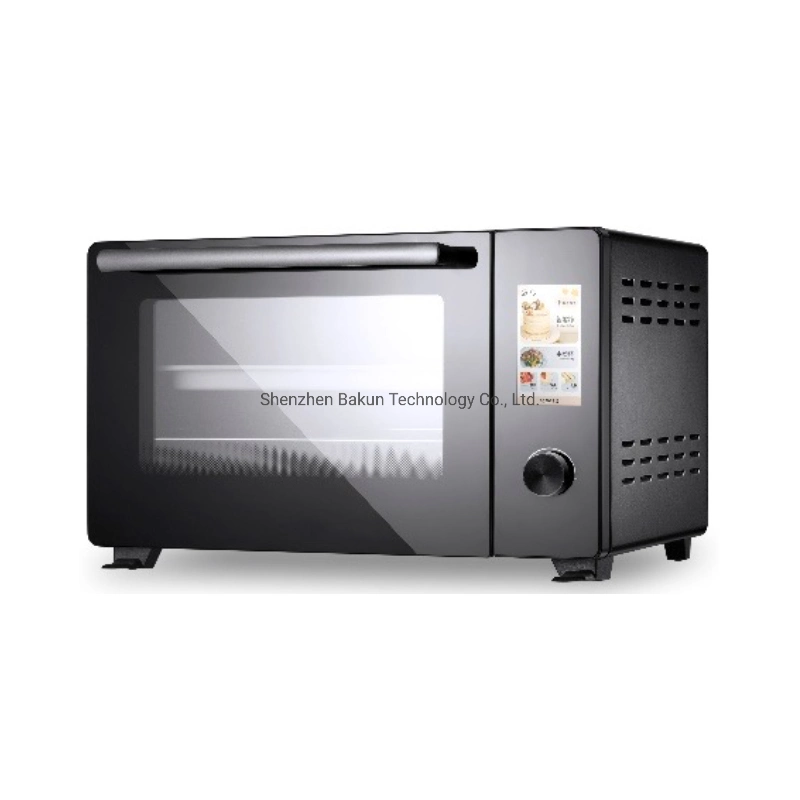
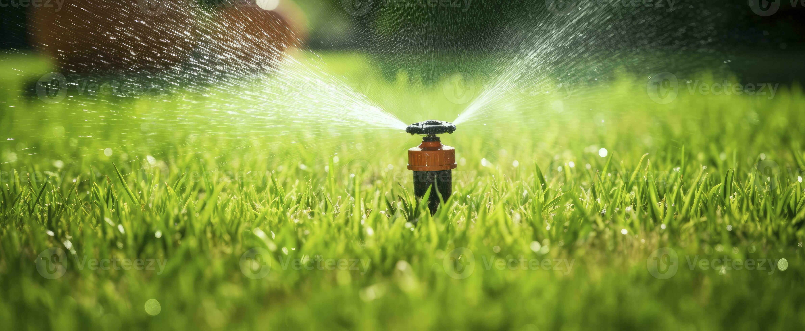

Technology
Automatic technology
The automatic technology is used to make sure your house is monitored at all times.
Ai brain
The Ai brain is used monitor and scan your house while your away it also can detect montion around the house
Memory tape and audio recording

The memory tape is used to watch and recored audios on the inside and outside of your home
Self protection

The self protection is used to make sure your house is on full alert at all times making sure your love ones are safe
Automated conveniences
What are automated convenieces you may ask?? Automated conveniences are house hold items that work on there own
Voice clock,reminder

The voice clock tells you the time the date and important events that are coming up such as birthdays holidays and due dates
Breakfast stove

You might be asking why you might need a automatic stove, have you ever been late and in hurry and needed a quick snack?
Weather box

What is a weather box you might be asking? A weather box can tell you excatly how hot or cold it will be it also tells you the rain percentage
Garage doors

Why buy a new garage door you might ask? this new garage is carbon fibber bullet proff and sound proof. This garage is high quality carbon fibber
Bed warmers

Whats the purpose of a bed warmer you might ask?? The bed warmer is best thing to keep you warm on those cold rainy nights.
heat controled baths

Whats the main purpose of the heat control bath. the heat controled bath is perfect after a long day at work or school.
garden sprinklers

These are just sprinklers